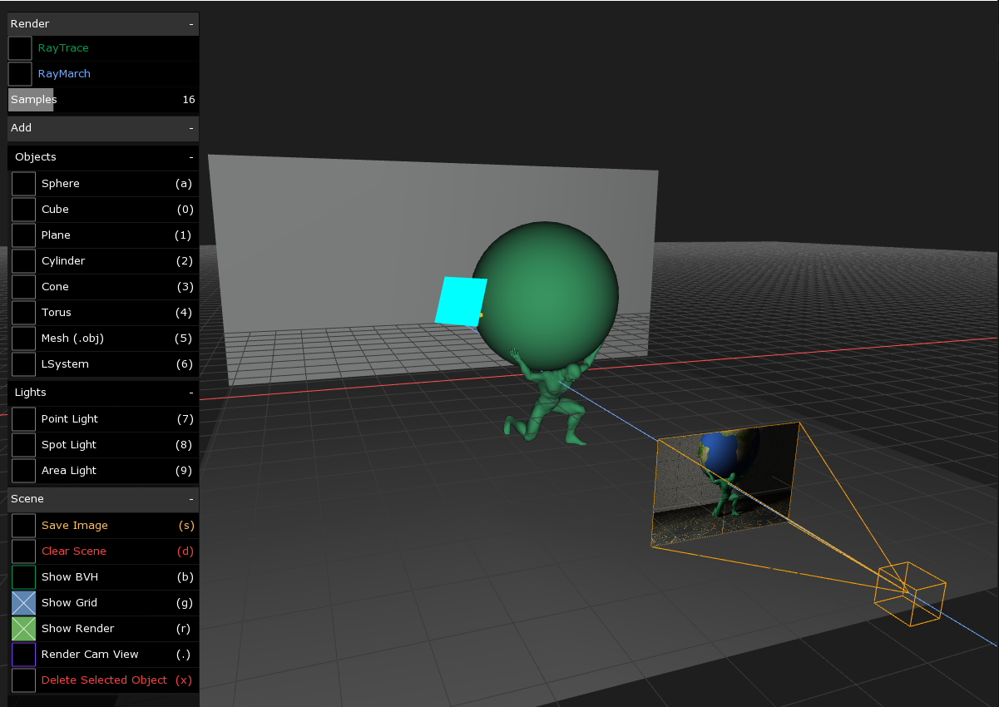
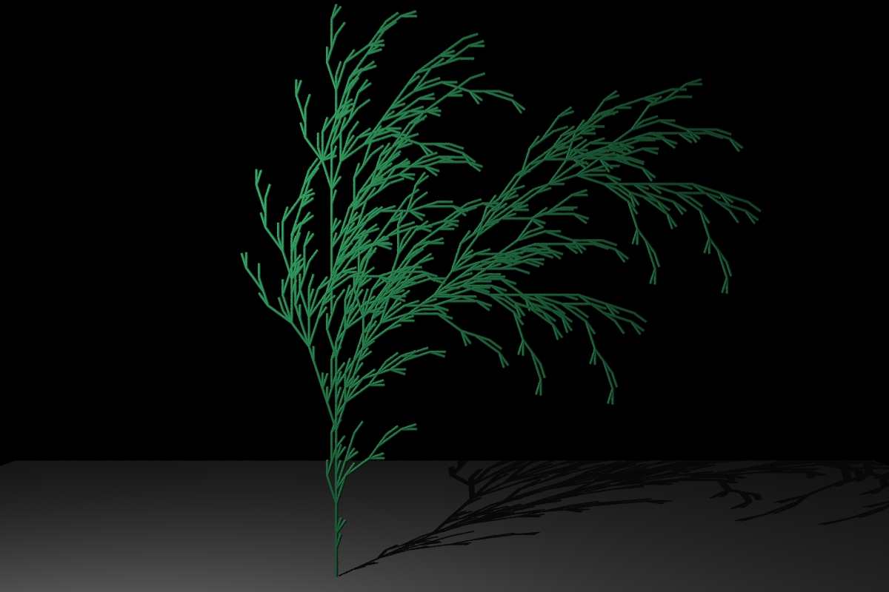
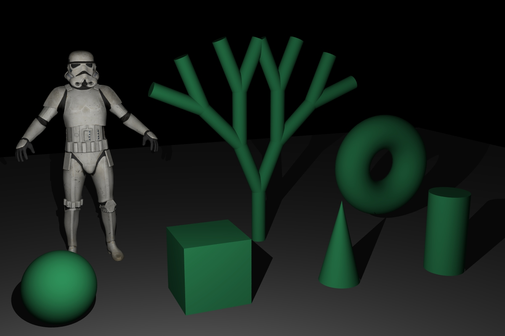
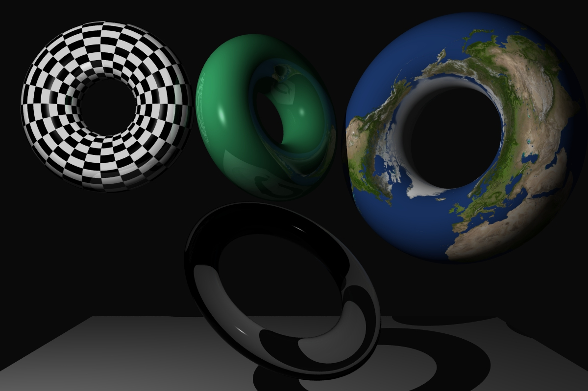

Ray Tracing Renderer
Description:
A C++/OpenFrameworks rendering application that supports both Ray Tracing and Ray Marching. Initially written for the Advanced Computer Graphics course at San Jose State University and later extended to include more rendering features. The goal of this project was to improve upon a simple ray tracer and learn about various concepts in computer graphics. The project's page(link below) lists the features included in the project.
Achievements:
- Designed and developed a ray-tracing rendering software using OpenFrameworks and C++
- Extended the renderer to include a ray-marching algorithm and an interactive user interface
- Incorporated multithreading and acceleration structures to speed up rendering times by 400%
- Gained valuable knowledge and skills working with C++, 3D graphics, and vector math
Key Components:
- C++
- OpenFrameworks
- Visual Studio 2019
- Object-Oriented Programming
- Multithreading
- Acceleration Structures
- Graphical User Interface
Images



